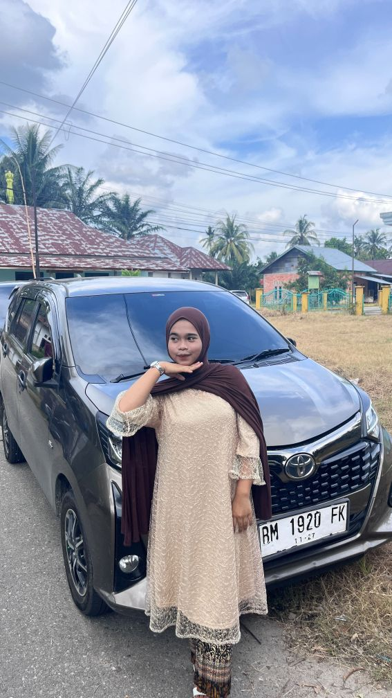

Halo, saya
Siswi SMKN 1 Bangkinang · Jurusan PPLG

Saya Tasya Laura, siswi jurusan Pengembangan Perangkat Lunak dan Gim (PPLG) di SMKN 1 Bangkinang. Saya suka belajar teknologi dan membuat website yang sederhana namun indah.
Jurusan PPLG
Terima kasih sudah berkunjung 💜